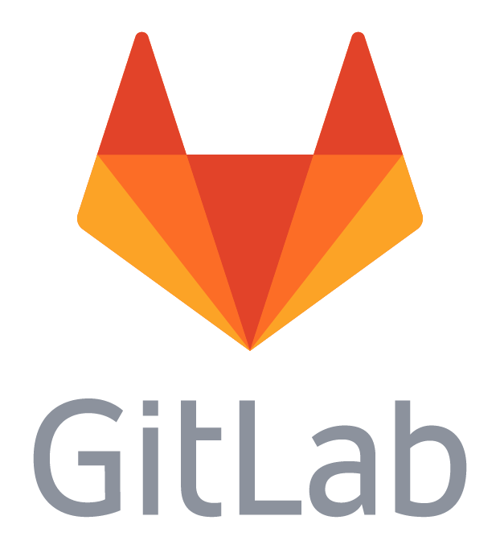
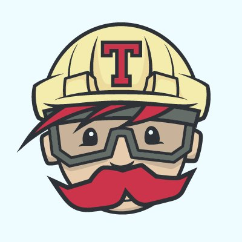
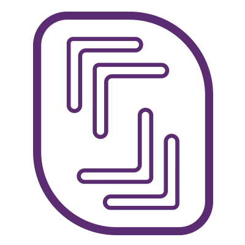
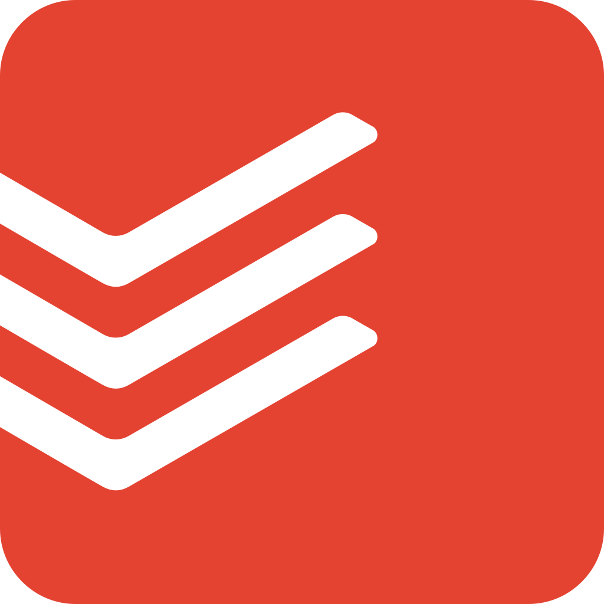
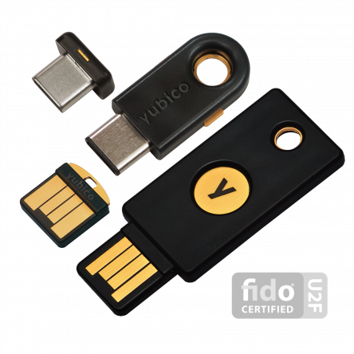
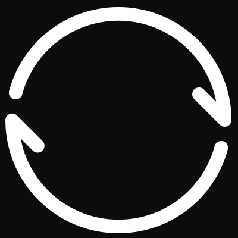

Télétravail et voyage
Entre mythe et réalité...

Moi ?
Consultant,
Formateur,
Contributeur.
Aujourd'hui…
99% de télétravail,
indépendance et liberté,
automatisation et méthodes.
En famille ?
Un équilibre important,être attentif à chacun !
Les enfants ?
École à la maison et partage……un enrichissement mutuel !
Travailler en voyageant…
…c'est avant tout travailler !
Prendre des décisions
Hyperconnectivité
Accepter les galères avec philosophie !
Trouver sa voie
Agile
Mais pas trop...
Communiquer
Simplifier
Automatiser
Et fiabiliser !
Outils


Gestion du code
Centraliser, documenter et packager.

Intégration continue
Regression, tests et intégrité.

Cloud, un serveur vite !
Livrer, tester, présenter…

Todoist
Je fais quoi maintenant ?
Ansible
Tout scripter pour fiabiliser…
Sécurité

SSH
Toujours garantir un accès…
GPG
Signer et savoir qui est qui…
LastPass
Un coffre pour tous mes mots de passe.

2FA, U2F et YubiKey

Backup, Kezako ?
Pour tout, toujours,
du mieux qu'on peut…
Et maintenant ?
Fais de ta vie un rêve et de ton rêve une réalité. Saint Exupéry
Merci, des questions ?
https://chstudio.fr/forum-afup